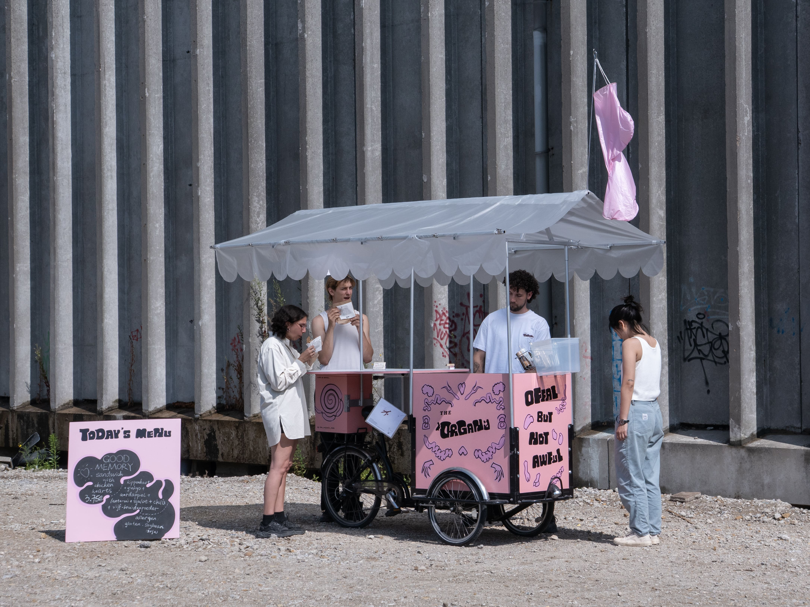
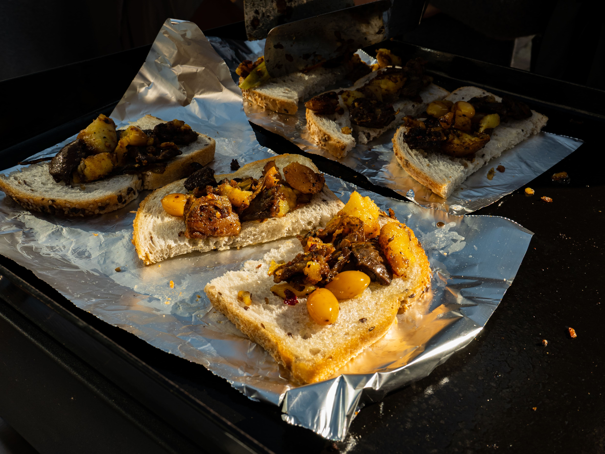
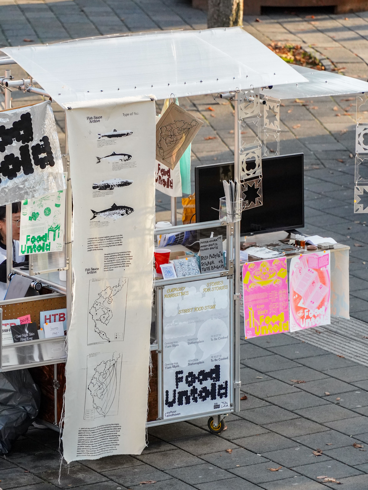
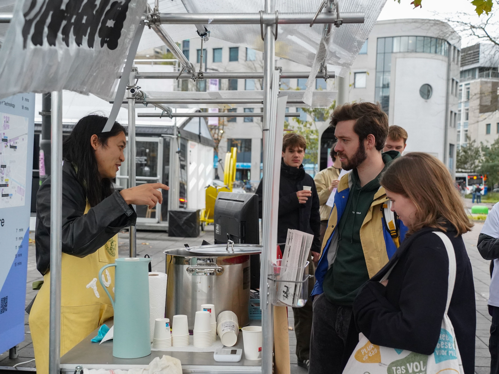

Abstract
This practice review examines the designer’s attempt to become a street food vendor, as an exploration of how social design may go beyond one-off intervention and integrate into everyday life. Reviewing two food cart projects developed in the Netherlands, the ’ORGANic club and Food Untold, it shows how such attempts expose the entanglement of design with labour, regulation, infrastructure, and municipal governance. In her practice, rather than focusing on the design of the food cart itself, the designer frames street vending as a method for understanding socio-material conditions from within. Through processes of building, costing, menu development, regulatory negotiation, and failed attempts to enter municipal market systems, the practice demonstrates knowledge emerges through participation rather than observation alone, which may pave the way for a truly sustainable social design project. Ultimately, it argues that street vending operates as both site and method for rethinking social design through embodied, infrastructural, and everyday economic practice, and reflects on how social designers may prolong the vitality of social interventions by turning it into transferable knowledge.
Keywords
Preface
‘So, you wanna be a businesswoman rather than a social designer?’
This was the question from my department head during the mid-term critique of my graduation project in Social Design.
At that moment, I was standing next to a prototype of a street food cart built from a Dutch bakfiets, and explaining the frustrations of designing a mobile food stand that could actually comply with Dutch regulations.
‘They are not contradictory,’ I replied.
Deciding to Become a Street Vendor
In 2023, I completed my graduation project, the ’ORGANic club. It’s a mobile street food cart serving offal (i.e., edible animal organs), an ingredient almost invisible from mainstream Dutch markets with contentious narratives. While challenging the stereotypes surrounding offal in the Netherlands, the stall also acts as a space to unpack political and cultural preconceptions behind these everyday culinary practices, encouraging dialogue and mutual understanding across different communities.

Pink paint, funny dish names, an intestine-like windbag for attention…The final design embraced the kind of humour often appreciated by the Dutch, yet lacking the radicalised aesthetics typically associated with ‘experimental’ pop-ups. No giant canopy digitally printed with tripe textures, no performers dressed as hearts, no theatrical celebration of eating offal.
The latter proposals can be easily related to ‘design intervention’, an approach increasingly favoured by social designers faced with more wicked problems. It is closely linked to design activism in public space, which is often described as a form of action situated between art and politics, using design to disrupt established ways of experiencing and engaging with everyday life (Markussen, 2013). Such interventions are often temporary by nature, with no announcement, commission or long-term dialogue with stakeholders (Design Academy Eindhoven, n.d.).
My concern, however, is what happens beyond the intervention itself. I am not questioning its significance, but wondering whether intervention can also become a shortcut, especially within a spectacle-driven economy.
In my case, the project should never stop at one-time cultural representation, nor was the food cart simply a convenient format appropriated to serve food in public space. If the design goal was to challenge the long-standing marginalisation, exoticisation, and novelty-seeking around offal—and eventually allow it to re-enter everyday local life—then perhaps what was needed was not another spectacular public event, but a socially sustainable way of existing.
And a real street business seemed like a promising thing.
Setting aside the romanticisation that often surrounds grassroots practices, street vending is, in many ways, a remarkably mature social form. Compared to carefully hatched ‘participatory platforms’ in some cases, a food stall has already survived countless negotiations with reality. It develops resilience by limiting its scale, explores complex social relationships, and iterates quickly based on the immediate feedback from reality, with no buffer at all. And every transaction is a small act of crowdfunding that keeps it alive.
For me at the time, within a school environment permeated by an anti-consumerist ethos that deliberately distanced itself from conventional commercial activity, starting a street business fulfilled both my rebellious impulse and my understanding of social design. In a sense, what interested me was not just the design of a street food business itself, but how social design could exist in the way a street food business does: embedded in everyday life, economically self-sustaining, socially sustainable over time.
Learning to Become a Street Vendor
My street vendor adventure began with designing and constructing the material infrastructure of the business: the stall itself.
During the revival of China’s ‘street vending economy’ a few years earlier, this practice seemed very much a low-threshold enterprise with the inexpensive vendor gadgets and prefabricated low-cost stalls on Taobao. This impression almost obscured a fundamental reality: the less money you have, the more you depend on an intimate understanding of urban space and local conditions.
For instance, during the 19th century, Amsterdam vendors secured tarpaulins to bridge railings, using the city’s existing infrastructure to create stable shelter with minimal materials while maximising the usable space beneath. The city’s persistent wind and rain meant they could never rely on the New York formula of a hot dog stand with only two umbrellas. Instead, stalls evolved into roof structures composed of metal frames and timber beams, whose interlocking construction withstood the weather.
Legislation was another decisive force shaping the design of the food cart. In the Netherlands today, one cannot simply carry two buckets of iced jelly on a shoulder pole, as can still be seen in parts of China, or suspend a wok and gas cylinder from either side of a bicycle, as in Southeast Asia. The normalisation of street food business in the country leads to complicated regulations: handwashing facilities with running water, separate areas for raw and cooked ingredients, refrigerated storage at prescribed temperatures, and an adequately enclosed workspace. Even the material of the worktop is subject to regulation. Failure to comply can result in substantial fines—or, more fundamentally, the municipality simply refuses permission for the stall to operate.
In this context, the increasingly fine-grained requirements compel mobile vendors to incorporate professional equipment and spatial planning into their operations. This, in turn, has directly shaped the form of contemporary street food stands in the Netherlands, explaining why highly integrated, professionalised mobile kitchens have taken over cheesy pushcarts. Moreover, the corresponding demand for electrical power further constrains the locations of such businesses within the city. They no longer circulate freely throughout the day, but instead remain fixed in designated squares or streets that provide electricity and are regulated by municipal authorities.
More or less, this explains why I felt so disoriented when I first began designing my own food cart. My financial situation only allowed for a low-tech, grassroots approach—an imprecise response to top-down requirements. And this is not what the Dutch government expects.
Well, the issue of the stall itself was difficult to fully resolve. But I had to move on to designing the product.
At first glance, using offal for street food did not seem particularly radical: it has long been tested across Southern Europe and much of Asia. It was tempting to assume that its absence from Dutch public life simply reflected a difference in eating habits.
But when I watched my friend spend four hours cleaning a batch of tripe for lampredotto, I had to acknowledge that behind every culture lies labour.

To understand what might actually be viable for the menu, I surveyed every type of edible offal I could source locally. In the Netherlands, certain types of offal that require relatively little pre-processing can be extremely cheap, such as heart, gizzard, or liver. Yet for labour-intensive ones, it is another story.
In 2023, pork intestine from a local butcher in Eindhoven cost more than €18 per kilo, significantly more than regular pork chops from a supermarket, or frozen intestines imported from Spain. This did not include the substantial labour required for subsequent cleaning, preparation, and cooking. Partly as a result, the offal-processing industry in the Netherlands is also less developed than in southern Europe or China, meaning that almost every stage of preparation would have to be done by my own hands.
Okay, no intestines then. But what about grilled chicken gizzard? At a Turkish supermarket, its retail price could be as low as €3.99 per kilo. For one portion (one skewer), its raw ingredient cost is around €0.27. This looked reasonable compared with a frozen frikandel at around €0.44, although frozen fries could cost less than €0.20 per portion. However, the latter two could go directly from the freezer into the fryer in no time with a few steps of walking. For the gizzard, the calculation was way more complex: cleaning, trimming, skewering… With my clumsy hands, preparing 100 portions could take between 1.5 and 2 hours.
How many customers would acknowledge and actually pay for this extra, invisible time?
Similar questions have been explored by projects such as Buurtijs. During their pop-up at de Appel Kiosk in Amsterdam, they calculated the production time for their locally sourced ice cream at around 15 minutes per portion. They then used this as a unit for a ‘solidarity payment structure’, asking customers to pay for those 15 minutes at their own hourly rate, making otherwise invisible input in food production part of the price (Siderius, n.d.).
Coming back to my business, this was still far from the end of the calculation. A lengthy preparation required renting a proper kitchen that met Dutch requirements, increased the need for helping hands, and reduced the margin available to cover the other costs of running the business.
Then, if profitability were the only concern, why would I not simply sell Dutch fries?
One afternoon, with my hands submerged in cloudy starch water as I cleaned sheep intestines in the kitchen, I totally understood why Turkish immigrants didn’t sell kokoreç in the Netherlands. Once a concept enters the reality of running a business, all feelings of nostalgia or notions of cultural fidelity cease to feel quite so romantic. Here, I arrived at a simple realisation: Designing a dish is, first and foremost, designing labour.
Looking in retrospect, setting up a street stall was not the final stage of implementing a design project. It was a method for understanding reality itself, accompanied by the continuous negotiation with space, labour, regulation, culture, and relationships.
Realising this, I would say that I want to sell fries.
A Second Chance
The following year, as a member of a culinary research and design collective To Be Cooked, I co-initiated another food cart project, Food Untold, which brought the mobile stall back into an artistic context.
The project created a convivial platform where immigrants and expats could speak through their own food. Food is often used to represent cultural identity in international and cross-cultural contexts, yet individuals can easily be flattened and devoured by predefined cultural narratives. As a response, we launched an open call and invited non-EU artists in Eindhoven to prepare personal recipes, serve them to the public, and share their own stories. By bringing visibility to alternative narratives from those who actually prepare and eat the food, Food Untold aimed to create space for self-representation and empowerment within the international community.
During Dutch Design Week 2024, six groups took turns showcasing how they navigate the bittersweetness of life through and with food. The artists came with their own stories, some with recipes, many of which were connected to broader gastronomic cultures or stereotypes surrounding certain ethnic groups in the Netherlands, but extended beyond them through personal experiences. On their pop-up days, the artists set up their narratives on the food cart using objects, films, prints, or other forms of storytelling, while cooking or serving food connected to those stories, such as ginger milk curd, Hong Kong milk tea, and tteokbokki. The street food format and the location increased public exposure. Audiences were invited to contribute their own food stories in exchange for the story-embedded food, making the encounter more reciprocal.

During the collaboration, we positioned To Be Cooked as a facilitator, adapting food preparation and serving to the capacity of the stall, providing cooking facilities and kitchen space, and arranging electricity onsite with a generator. We also designed posters using visual materials provided by the artists to circulate the stories beyond DDW through book fairs and bookstore consignment.
Installation, curation, public participation… This was, in many ways, a typical design festival project. The artist participants were not employed as vendors in the conventional sense. The project received funding from the Municipality of Eindhoven, which allowed for a small fixed labour fee and reimbursement for materials. They could also sell their merchandise at the stall without paying a commission.
Looking back, this arrangement was possible partly because we, as young, financially precarious non-EU designers, shared a certain solidarity with our collaborators, who were mostly recent graduates or students from our school. The artist participants even agreed from the beginning that, if funding was not secured, they would cover the costs of their own parts, recognising our financial and labour investment in making the platform possible. Within this friendship-based atmosphere, questions of labour and payment were present but partly softened by a shared understanding of the project as an opportunity for exchange, visibility, experimentation, and mutual help.

For me, however, this project carried another meaning: it offered a second chance to be a street vendor. From the beginning, there was a shared conviction within To Be Cooked that the cart should not end with Dutch Design Week. We imagined it moving into weekly markets, operating as a small-scale food business, and even becoming a platform where friends’ works could be distributed or exchanged through everyday circulation beyond exhibition contexts.
As the product designer in the team, I undertook more rigorous regulatory research this time, combined with a comprehensive optimisation of the spatial layout and structural stability according to the different roles and flows of a future food business. We also began preparing for the legal procedures: registration at KVK (Netherlands Chamber of Commerce) as a food truck business, getting a market trader’s license and then a market permit, registration with NVWA (Netherlands Food and Consumer Product Safety Authority), learning the food-safety plan called HACCP... Some are at the municipality level, while others are affiliated with the industries, weaving a labyrinth of numerous hyperlinks across webpages with intertwined preconditions for application.
The difference between the festival and the market became increasingly apparent. During Dutch Design Week, our food activities were covered by the festival’s institutional framework. Despite complicated email exchanges with the organiser, Dutch Design Foundation arranged the location and related permissions with the municipality. We provided a detailed presentation several months in advance, including the food-safety facilities on the stand and our menu. In that context, we were not an independent food business but exhibitors, and the food stand was interpreted as an artwork. We could not sell food independently, but neither did we have to enter the municipal market system as a standalone vendor.
Entering that system was different. Simply meeting the published technical requirements was not sufficient. After visiting local markets twice to find the person in charge and making a final call with the municipal market office, one member of the team returned with the news that our street food stand would not be accepted in Eindhoven.
‘They said the stand needs to be “enclosed on three sides”, and our stand doesn’t qualify.’
‘But we can add the tarpaulin! The structure of the cart is very adaptable! Just hang it down from the metal tubes of the roof!’
Our communicator let out a long sigh: ‘Well, they said nothing like this had ever appeared on the market. So it’s just, no.’
We could only conclude that our cart fell between established categories. The NVWA checklist refers to preventing dust from entering food and contamination by passers-by or the vendor, but does not specify precisely what counts as ‘enclosed’. Meanwhile, many existing market stalls, including those selling fish and chips, did not correspond neatly to the same interpretation, but used additional cloth around otherwise standardised market structures. Our cart was neither a conventional market stall nor a fully integrated commercial food truck. The design of our cart could be easily adapted, but probably the authorities did not know how to evaluate such an avant-garde, if not grassroots, food cart.
In the end, the street food business was once again shelved. Sometimes, the world is just not that romantic or inclusive as one may think. The field of public art may welcome a ‘food cart’, but the city does not necessarily accommodate a ‘business’.
From Intervention to Integration: Did I fail?
Looking back, the endings of these two iterations of practice may appear somewhat melancholic. I did not end up with a thriving food truck, nor did my design truly merge into everyday life in the way I had imagined in its conceptual framing; instead, it seemed to remain as a series of temporary interventions.
However, it was precisely through repeatedly attempting to become a street vendor that I began to understand my research topics in an embodied way: not through interviews or essays, but through pushing a cart, calculating costs, revising menus, studying regulations, and negotiating with municipal authorities. These tangible obstacles gradually rendered the mindset of ‘design as world-saving’ and its accompanying didactic approaches ineffective.
If the intervention itself does not last, then what can remain from such a journey? Could the lessons learned through trying, failing, and negotiating with the system be turned into something that extends beyond my own experience?
One inspiring example is Vendor Power! (Center for Urban Pedagogy, 2009). By translating street-vending regulations into a portable, readable pamphlet for vendors in New York, it helps the community to avoid unfair and costly fines. Instead of leaving individual vendors to negotiate the system alone, the project turned regulatory knowledge into a collective resource.
Then, if I approach the ‘hit-and-run’ design intervention as the starting stage to generate knowledge instead of the final outcome of a social design project, making it part of the resources of the people involved in relevant everyday practices, potential emerges for its lifespan to be prolonged.
As I returned to a perspective of an ‘ordinary person’, confronting conditions such as operation, regulation, labour, profit, risk, and the mundane yet persistent realities that shape a culture but rarely enter design discourse, it was only then that I began to understand how, from this position, I might act as a designer capable of embedding work into everyday life, rather than producing prototypes that are perpetually unable to land.
Now, back to the question from my department head.
‘So, you wanna be a businesswoman rather than a social designer?’
The question itself is wrong.
Running a business is not the opposite of social design. At least for me, it has become one way of practising it. I would say, to become a better social designer, I first have to learn how to become a street food vendor.
References
Center for Urban Pedagogy (2009) Vendor Power!. New York: Center for Urban Pedagogy, Street Vendor Project and Candy Chang. Available at: https://welcometocup.org/projects/vendor-power (Accessed: 24 September 2026).
Design Academy Eindhoven (n.d.) ‘Intervention’. Lexicon of Design Research. Available at: http://www.lexiconofdesignresearch.com/lexicon/texts/intervention (Accessed: 20 September 2026).
Markussen, T. (2013) ‘The Disruptive Aesthetics of Design Activism: Enacting Design between Art and Politics’, Design Issues, 29(1), pp. 38–50. doi: 10.1162/DESI_a_00195.
Siderius, T. (n.d.) ‘Kiosks of Value: Rethinking money at the market in Amsterdam’. de Appel. Available at: https://www.deappel.nl/en/pages/16564-kiosks-of-value-rethinking-money-at-the-market-in-amsterdam (Accessed: 24 September 2026).
Author Bio
Ziyi Lian is a social designer and independent researcher. Graduated from Design Academy Eindhoven (NL), she is currently based in China and the Netherlands. Her practice lies at the intersection of community, food, public space and vernacular culture. She works to explore hidden and alternative narratives, while creating space for reflection and social intervention through situated, participatory and low-tech means.
Recommended Citation
Lian, Z. (2026) ‘Learning to Be a Street Food Vendor: Rethinking Social Design Through Everyday Business’, Everyday Life: International Journal of Public Culture, Art and Design, 1(1), pp. 1–13.
Article URL: https://articles.everydaylifejournal.uk/articles/practice-reviews/learning-to-be-a-street-food-vendor/
Copyright
© 2026 The Author(s). Published by Everyday Life: International Journal of Public Culture, Art and Design. This is an open-access article distributed under the terms of the Creative Commons Attribution-NonCommercial 4.0 International Licence (CC BY-NC 4.0), which permits non-commercial use, distribution and reproduction in any medium, provided the original work is properly cited. Everyday Life is an independent open-access journal with no submission or publication fees.